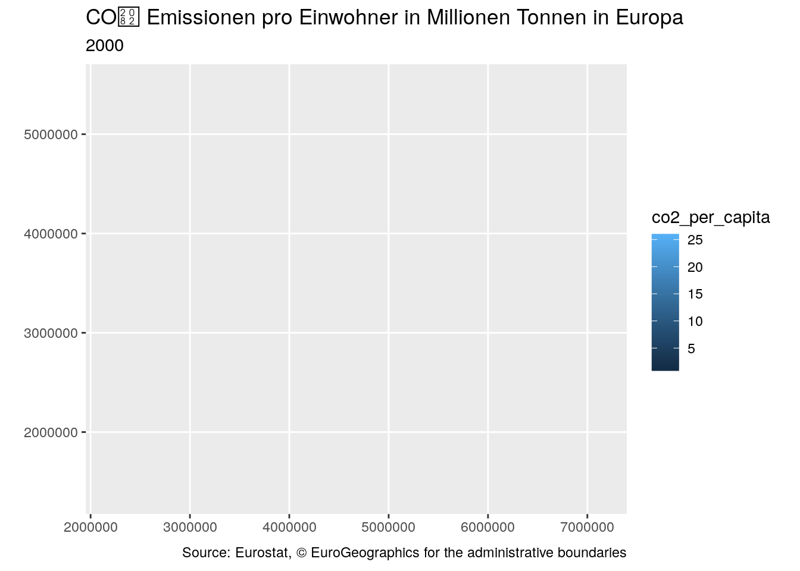
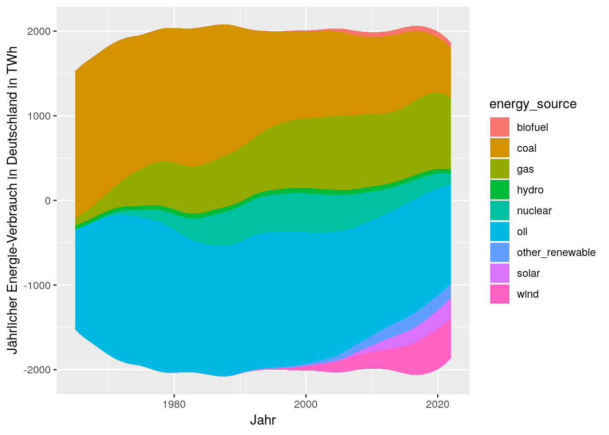
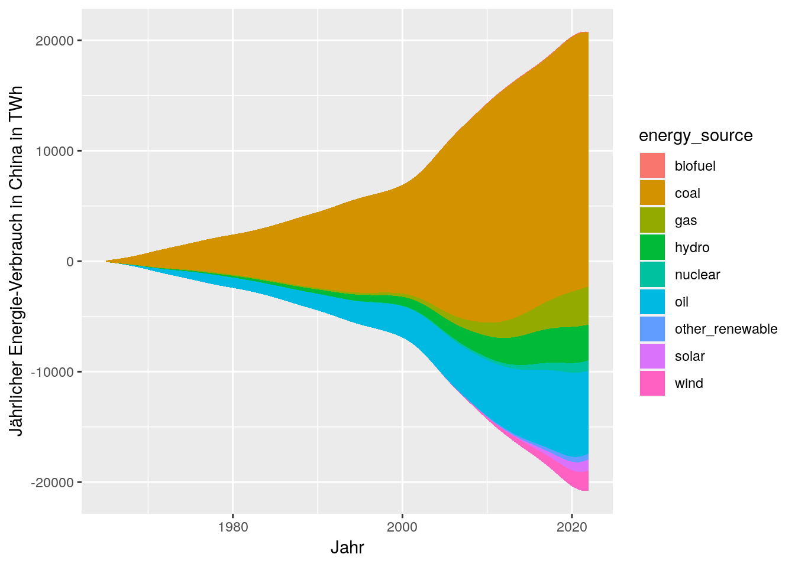
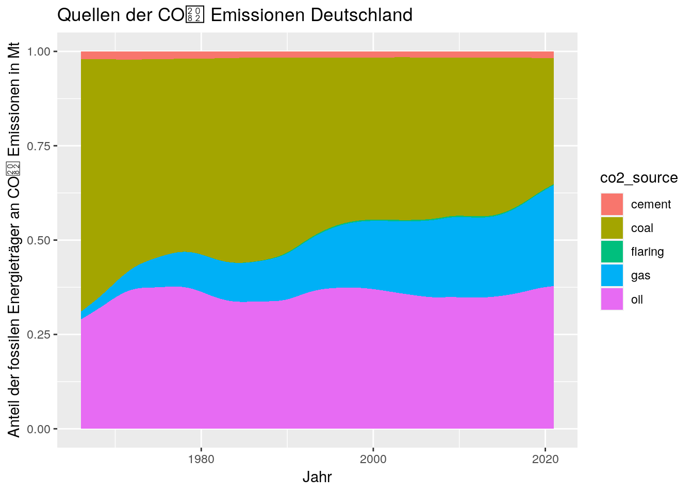
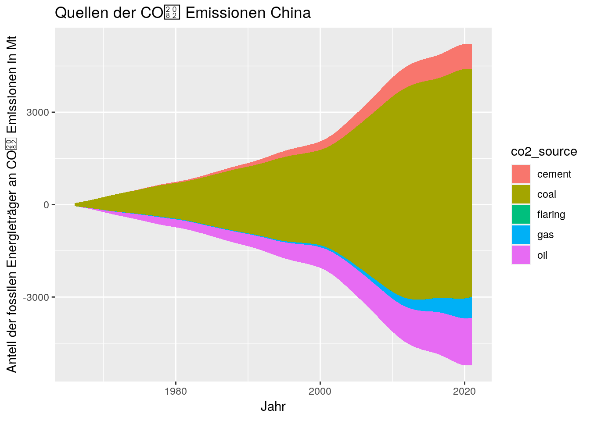

library(tidyverse)
types = readr::cols(
year = 'i'
)
energy <- readr::read_csv('https://raw.githubusercontent.com/owid/energy-data/master/owid-energy-data.csv', col_types = types)
co2 <- readr::read_csv('https://raw.githubusercontent.com/owid/co2-data/master/owid-co2-data.csv', col_types = types)Ausarbeitung R
China als umstrittenes Thema in Klimadebatte
Fragestellung
Die Klimakrise ist eines der drängendsten Probleme unserer Zeit. Die Frage der Verantwortlichkeit wird dabei häufiger gestellt, statt Lösungen für die Krise zu suchen. In diesem Zusammenhang wird oft die Rolle Chinas genannt, da das Land der größte CO₂-Emittent der Welt ist.
Teilweise werden dabei aufgrund der großen Emissionen Chinas die Rolle der westlichen Industriestaaten wie Deutschland heruntergespielt. Bspw. hat FDP-Bundestagsabgeordneter Oliver Luksic in folgendem Tweet („Tweet von Oliver Lucsic“ 2022) genau dies versucht. In dem Tweet vergleicht er die jährlichen CO₂-Emissionen Chinas und Deutschlands.
— Oliver Luksic ((OlliLuksic?)) November 12, 2022
Doch ist China tatsächlich schuldig an der Klimakrise? In diesem Text werden wir uns damit auseinandersetzen und versuchen, eine fundierte Antwort darauf zu geben.
Zur Datenanalyse wird die Programmiersprache R (R Core Team 2022) verwendet. Die Daten werden mit dem Paket tidyverse (Hadley Wickham 2019) geladen und visualisiert. Für die Visualisierung wurde zusätzlich das Paket ggstream (Sjoberg 2021) verwendet. Um Kartendaten zu visualisieren, wurden die Pakete giscoR (Hernangómez 2023) und sf (Pebesma 2018) verwendet. Anschließend wurden die Karten mit dem Paket gganimate (Pedersen und Robinson 2022) animiert. Damit die Animation gerendert werden kann, kommen das Paket gifski (Ooms 2022) und transformr (Pedersen 2022) zum Einsatz.
Laden von Daten
Um die Fragestellung zu beantworten, wie verantwortlich China an der Klimakrise ist, werden zwei Datensätze betrachtet: von Our World in Data (OWID) den CO₂-Datensatz (Hannah Ritchie 2020) und den Energie-Datensatz (Hannah Ritchie, Max Roser, Pablo Rosado 2022). Beide diese Datensätze können im CSV-Format von der OWID-Github-Seite („Our World in Data“ 2023) geladen werden.
Beim Einlesen der Daten wird die Spalte year als Integer eingelesen, da sie nur ganze Zahlen beinhaltet. Die Spalte population beinhaltet auch nur ganze Zahlen, wird aber als Double eingelesen, da der Kontinent Asien mehr als 2147483647 (maximaler Wert für Integer) Einwohner*innen hat. Die Spalten country und iso_code werden automatisch als Character eingelesen und die restlichen Spalten erhalten den Datentyp Double.
Damit auch Karten visualisiert werden können laden wir zusätzlich die Ländergrenzen von Europa. Diese werden mit dem Paket giscoR (Hernangómez 2023) von der Eurostat API („GISCO - the Geographic Information System of the COmmission“ 2023) heruntergeladen. Diese Daten können über einen Left-Join auf den Wert ISO3_CODE bzw. iso_code mit den anderen Datensätzen verbunden werden.
library(giscoR)
EU_countries <- gisco_get_countries(region = "Europe") %>%
st_transform(3035)Glaubwürdigkeit der Daten
Beide Datensätze beinhalten gleiche Spalten, wie Bevölkerungsdaten oder Bruttoinlandsprodukte. Um eine Vergleichbarkeit beider Datensätze zu garantieren, werden beide Daten miteinander verglichen. Zwar stammen beide aus derselben Quelle, dennoch ist nicht garantiert, dass die Daten übereinstimmen.
energy.filtered <- energy %>%
filter(country == 'Germany') %>%
select(country, year, gdp, population)
co2.filtered <- co2 %>%
filter(country == 'Germany') %>%
select(country, year, gdp, population)
ggplot() +
geom_line(data = co2.filtered, aes(x = year, y = gdp, color = "CO2")) +
geom_line(data = energy.filtered, aes(x = year, y = gdp, color = "Energy")) +
labs(
title = NULL,
x = "Jahr",
y = "Bruttoinlandsprodukt"
) +
scale_color_manual(
name = "Datensatz",
breaks = c('CO2', "Energy"),
values = c("CO2" = "#f8766d", "Energy" = "#00bfc4")
)ggplot() +
geom_line(data = co2.filtered, aes(x = year, y = population, color = "CO2")) +
geom_line(data = energy.filtered, aes(x = year, y = population, color = "Energy")) +
labs(
title = NULL,
x = "Jahr",
y = "Einwohnerzahlen"
) +
scale_color_manual(
name = "Datensatz",
breaks = c('CO2', "Energy"),
values = c("CO2" = "#f8766d", "Energy" = "#00bfc4")
)In beiden Datensätzen liegen die Daten exakt aufeinander (vgl. Abbildung 1, Abbildung 2). Der Energy-Datensatz umfasst Daten, die bis 1900 zurückreichen, was für die Zwecke, für die er verwendet wird, ausreichend ist. Beide Datensätze lassen sich direkt miteinander vergleichen.
Beide Datensätze beinhalten auch fehlende Werte. Bspw. in der Spalte cement_co2 im CO₂-Datensatz sind sowohl Werte mit NA als auch 0 (siehe folgenden Code-Block). Ähnliche Muster existieren in weiteren Spalten in beiden Datensätzen. Da diese Werte in einer zeitlich logischen Reihenfolge vorkommen ist davon auszugehen, dass bei den NA-Werten keine Messungen vorliegen. Deshalb werden die NA-Werte nicht weiter behandelt.
co2 %>%
filter(country == 'Afghanistan' & year > 1947) %>%
head(13)# A tibble: 13 × 74
country year iso_c…¹ popul…² gdp cemen…³ cemen…⁴ co2 co2_g…⁵ co2_g…⁶
<chr> <int> <chr> <dbl> <dbl> <dbl> <dbl> <dbl> <dbl> <dbl>
1 Afghan… 1948 AFG 7503485 NA NA NA NA NA NA
2 Afghan… 1949 AFG 7624058 NA 0 0 0.015 NA NA
3 Afghan… 1950 AFG 7480464 9.42e 9 0 0 0.084 0.07 475
4 Afghan… 1951 AFG 7571542 9.69e 9 0 0 0.092 0.007 8.70
5 Afghan… 1952 AFG 7667534 1.00e10 0 0 0.092 0 0
6 Afghan… 1953 AFG 7764549 1.06e10 0 0 0.106 0.015 16
7 Afghan… 1954 AFG 7864289 1.09e10 0 0 0.106 0 0
8 Afghan… 1955 AFG 7971933 1.11e10 0 0 0.154 0.048 44.8
9 Afghan… 1956 AFG 8087730 1.16e10 0 0 0.183 0.029 19.0
10 Afghan… 1957 AFG 8210207 1.16e10 0 0 0.293 0.11 60
11 Afghan… 1958 AFG 8333827 1.22e10 0 0 0.33 0.037 12.5
12 Afghan… 1959 AFG 8468220 1.26e10 0.018 0.002 0.385 0.055 16.6
13 Afghan… 1960 AFG 8622473 1.30e10 0.018 0.002 0.414 0.029 7.62
# … with 64 more variables: co2_including_luc <dbl>,
# co2_including_luc_growth_abs <dbl>, co2_including_luc_growth_prct <dbl>,
# co2_including_luc_per_capita <dbl>, co2_including_luc_per_gdp <dbl>,
# co2_including_luc_per_unit_energy <dbl>, co2_per_capita <dbl>,
# co2_per_gdp <dbl>, co2_per_unit_energy <dbl>, coal_co2 <dbl>,
# coal_co2_per_capita <dbl>, consumption_co2 <dbl>,
# consumption_co2_per_capita <dbl>, consumption_co2_per_gdp <dbl>, …Visualisierung und Aggregation der Daten
Zu Beginn wurde geprüft, ob die Auswertung von Hr. Lucsic korrekt war. Dazu wurde der Plot, auf den er sich in seinem Tweet („Tweet von Oliver Lucsic“ 2022) bezogen hat, nachgebaut (vgl. Abbildung 3).
co2 %>%
filter(country == "China" | country == "Germany") %>%
select(country, year, co2) %>%
ggplot() +
geom_line(aes(x = year, y = co2, color = country))+
labs(
title = NULL,
x = "Jahr",
y = "CO₂ in Millionen Tonnen"
)Hier ist zu erkennen, dass China ca. 17-mal mehr CO₂ als Deutschland in 2021 ausgestoßen hat. Die Zahlen, auf die sich Lucsic („Tweet von Oliver Lucsic“ 2022) bezogen hatte, sind korrekt. Problematisch ist, dass hier nicht die Bevölkerungsgröße einbezogen wurde. Im Plot Abbildung 4 ist diese mit berücksichtigt.
co2 %>%
filter(country == "China" | country == "Germany") %>%
select(country, year, co2_per_capita) %>%
ggplot() +
geom_line(aes(x = year, y = co2_per_capita, color = country))+
labs(
title = NULL,
x = "Jahr",
y = "CO₂ in Millionen Tonnen pro Einwohner"
)Es zeigt sich, dass die Deutschland für die meiste Zeit deutlich mehr CO₂ ausgestoßen hat. In 2021 haben China und Deutschland ca. gleich viele CO₂-Emissionen produziert.
Zwar wird in dieser Arbeit Chinas Emissionen hauptsächlich mit Deutschland verglichen, die Emissionszahlen aus den weiteren europäischen Industriestaaten sind aber vergleichbar. In der Animation in Abbildung 5 werden die CO₂-Emissionen pro Einwohner in Europa von 2000 bis 2021 dargestellt. Über den Verlauf der Jahre ist in allen Ländern ein langsamer Abfall der Emissionen zu erkennen. Dennoch nimmt Deutschland im Vergleich zu anderen Ländern einen hohen Wert ein.
library(sf)
library(gganimate)
library(gifski)
library(transformr)
co2 %>%
filter(year > 1999) %>%
select(iso_code, year, co2_per_capita) %>%
left_join(EU_countries, ., by = c("ISO3_CODE" = "iso_code")) %>%
ggplot() +
geom_sf(aes(fill = co2_per_capita)) +
xlim(c(2200000, 7150000)) +
ylim(c(1380000, 5500000)) +
labs(
title = 'CO₂ Emissionen pro Einwohner in Millionen Tonnen in Europa',
subtitle = '{frame_time}',
caption = paste0(
"Source: Eurostat, ", gisco_attributions()
),
) +
transition_time(year) +
ease_aes('linear')
Vergleicht man den jährlichen Energieverbrauch zwischen Deutschland und China, zeigt sich ein sehr ähnliches Bild wie bei den CO₂-Emissionen (vgl. Abbildung 6).
energy %>%
filter((country == "China" | country == "Germany") & year > 1965) %>%
select(country, year, energy_per_capita) %>%
ggplot() +
geom_line(aes(x = year, y = energy_per_capita, color = country)) +
labs(title = NULL, x = "Jahr", y = "Energie-Verbrauch pro Einwohner in kWh")Es ist festzuhalten, dass der Energieverbrauch pro Einwohner in Deutschland höher ist als in China. 1965 verbraucht Deutschland 18,4-mal mehr Energie pro Einwohner als China. In 2021 verbraucht Deutschland pro Einwohner ca. 1,37-mal mehr Energie. Zwar schließt sich diese Lücke, aber nicht, indem in Deutschland weniger Energie verbraucht wird, sondern indem China aufschließt. Deutschlands Tendenz sinkt, liegt aber weiterhin über dem Stand von 1965.
Eine wichtige Frage in diesem Zusammenhang ist, woraus die verbrauchte Energie gewonnen wurde. Die Plots Abbildung 7 und Abbildung 8 beschreiben, welche Energiequellen über die Zeit verwendet wurden.
library(ggstream)
energy %>%
filter(country == "Germany") %>%
select(year, country, population, ends_with("_consumption")) %>%
pivot_longer(cols = c("coal_consumption", "oil_consumption", "gas_consumption", "nuclear_consumption", "biofuel_consumption","solar_consumption", "wind_consumption", "hydro_consumption", "other_renewable_consumption"),
names_to = "energy_source",
values_to = "energy_consumption") %>%
mutate(
energy_source = gsub("_consumption", "", energy_source)
) %>%
ggplot() +
geom_stream(aes(x = year, y = energy_consumption, fill = energy_source)) +
labs(title = NULL, x = 'Jahr', y = 'Jährlicher Energie-Verbrauch in Deutschland in TWh')
energy %>%
filter(country == "China") %>%
select(year, country, population, ends_with("_consumption")) %>%
pivot_longer(cols = c("coal_consumption", "oil_consumption", "gas_consumption", "nuclear_consumption", "biofuel_consumption","solar_consumption", "wind_consumption", "hydro_consumption", "other_renewable_consumption"),
names_to = "energy_source",
values_to = "energy_consumption") %>%
mutate(
energy_source = gsub("_consumption", "", energy_source)
) %>%
ggplot() +
geom_stream(aes(x = year, y = energy_consumption, fill = energy_source)) +
labs(title = NULL, x = 'Jahr', y = 'Jährlicher Energie-Verbrauch in China in TWh')
Im direkten Vergleich kann man erkennen, dass in Deutschland langsam weniger Energie verbraucht wird, während Chinas aggressive Wirtschaftspolitik immer einen immer höheren Energieverbrauch in Kauf nimmt.
Zwar kommen in Deutschland erneuerbare Energiequellen langsam, aber die fossilen Energieträger sind weiterhin die primären Energiequellen. Gerade Öl und Gas sind mit dem Abschalten vieler Atomkraftwerke („Bundesregierung beschließt Ausstieg aus der Kernkraft bis 2022“ 2023) noch wichtiger geworden. Jedoch ist das Ziel bis 2022 vollständig aus der Atomkraft auszusteigen nicht erreicht worden (siehe Abbildung 7).
Chinas Energie kommt weiterhin zum größten Teil aus Kohle und Öl. Zwar sind auch hier Ansätze auf dem Weg zu erneuerbaren Energien, sie werden jedoch eher als zusätzliche Energiequelle verwendet, statt fossile Energieträger abzulösen. Es wurde im Gegensatz zu Deutschland aber deutlich stärker in Wasserkraft investiert, was aber auch geografische Hintergründe hat. Dadurch schadet China seinen Nachbarn wie Vietnam, da Flüsse wie der Mekong immer weniger Wasser führen (Lenz 2020).
In den Plots (Abbildung 9, Abbildung 10) werden die Quellen der CO₂-Emissionen ins Verhältnis gesetzt.
co2 %>%
filter(country == "Germany" & year > 1965) %>%
select(country, year, coal_co2, cement_co2, flaring_co2, gas_co2, oil_co2) %>%
pivot_longer(cols = ends_with("co2"),
names_to = "co2_source",
values_to = "co2_emissions"
) %>%
mutate(
co2_source = gsub("_co2", "", co2_source)
) %>%
ggplot() +
geom_stream(aes(x = year, y = co2_emissions, fill = co2_source), type = "proportional") +
labs(title = "Quellen der CO₂ Emissionen Deutschland", x = 'Jahr', y = 'Anteil der fossilen Energieträger an CO₂ Emissionen in Mt')
co2 %>%
filter(country == "China" & year > 1965) %>%
select(country, year, coal_co2, cement_co2, flaring_co2, gas_co2, oil_co2) %>%
pivot_longer(cols = ends_with("co2"),
names_to = "co2_source",
values_to = "co2_emissions"
) %>%
mutate(
co2_source = gsub("_co2", "", co2_source)
) %>%
ggplot() +
geom_stream(aes(x = year, y = co2_emissions, fill = co2_source), type = "proportional") +
labs(title = "Quellen der CO₂ Emissionen China", x = 'Jahr', y = 'Anteil der fossilen Energieträger an CO₂ Emissionen in Mt')
Festzustellen ist, dass Kohle in Deutschland immer mehr an Bedeutung verliert. Öl und besonders Gas gewinnen an Bedeutung. Gerade Gas ist problematisch im Kontext, dass ein Großteil des Gases aus Russland stammte („Gasversorgung: Abhängigkeiten verringern“ 2023).
In China verliert Kohle auch an Bedeutung, trotzdem stammen noch 70 % der Emissionen aus Kohle (vgl. Abbildung 10). In Deutschland liegt der Anteil nur noch bei 35 %. Die Kohle wird in China jedoch nicht abgelöst, es kommen zusätzliche Energiequellen hinzu (vgl. Abbildung 11).
co2 %>%
filter(country == "China" & year > 1965) %>%
select(country, year, coal_co2, cement_co2, flaring_co2, gas_co2, oil_co2) %>%
pivot_longer(cols = ends_with("co2"),
names_to = "co2_source",
values_to = "co2_emissions"
) %>%
mutate(
co2_source = gsub("_co2", "", co2_source)
) %>%
ggplot() +
geom_stream(aes(x = year, y = co2_emissions, fill = co2_source)) +
labs(title = "Quellen der CO₂ Emissionen China", x = 'Jahr', y = 'Anteil der fossilen Energieträger an CO₂ Emissionen in Mt')
Fazit
Grundsätzlich wurde festgestellt, dass China ca. 17-mal mehr CO₂ im Jahr 2021 ausgestoßen hat, mit Tendenz steigend. Trotzdem tragen die westlichen Industriestaaten wie Deutschland viel Verantwortung an der momentanen Klimakrise. Zum einen stößt Deutschland pro Einwohner ähnlich viele CO₂-Emissionen aus, zum anderen hat Deutschland über weite Teile seiner Geschichte deutlich mehr Emissionen produziert, worauf der aktuelle Wohlstand auch aufbaut. Zwar liegt Deutschland beim Energieverbrauch pro Person höher als China, beide Nationen sind bei den CO₂-Emissionen pro Person ungefähr gleich auf. In Deutschland sinkt dabei die Tendenz eher, während Chinas Energieverbrauch und CO₂-Emissionen stark wachsen.
In Deutschland wird zwar in erneuerbare Energien investiert, dies hat aber bisher nicht den erwünschten Effekt. Weiterhin stammt die überwiegende Mehrheit des in Deutschland verbrauchten Stroms aus fossilen Quellen. Zumindest sinkt die Tendenz bei den CO₂-Emissionen leicht. China im Gegensatz baut einen Großteil des Wirtschaftswachstums in den letzten Jahrzehnten auf Kohle. Zwar wird Kohle langsam abgelöst, dies aber nur mit fossilen Energieträgern.
Zu bedenken ist, dass in dieser Analyse beide Länder unabhängig voneinander betrachtet wurden. Dies ist im heutigen Markt nicht mehr realistisch. Sehr viele Produkte werden in China produziert und in Deutschland verkauft. Jedoch konnte dieser Blickwinkel nicht betrachtet werden. Festzuhalten ist, dass Deutschland und die westlichen Staaten ebenfalls von den Emissionen in China profitieren und viel Produktion nach China verlagert wurde.
Das ändert jedoch nicht, dass die Emissionen ausgestoßen wurden und werden. Seit dem Klimaabkommen 2015 ist beklagend wenig Fortschritt zu beobachten. Besonders tragisch ist, dass die Tendenz eher steigend ist und damit die Abwendung einer Klimakatastrophe immer unwahrscheinlicher wird.
Quellen
„Bundesregierung beschließt Ausstieg aus der Kernkraft bis 2022“. 2023. Die Bundesregierung informiert \(\vert\) Startseite. https://www.bundesregierung.de/breg-de/suche/bundesregierung-beschliesst-ausstieg-aus-der-kernkraft-bis-2022-457246.
„Gasversorgung: Abhängigkeiten verringern“. 2023. https://www.bundesregierung.de/breg-de/themen/gasversorgung-abhaengigkeiten-verringern-441270?view=renderNewsletterHtml.
„GISCO - the Geographic Information System of the COmmission“. 2023. https://ec.europa.eu/eurostat/web/gisco/overview.
Hadley Wickham, Jennifer Bryan, Mara Averick. 2019. „Welcome to the tidyverse“. Journal of Open Source Software 4 (43): 1686. https://doi.org/10.21105/joss.01686.
Hannah Ritchie, Max Roser, Pablo Rosado. 2022. „Energy“. Our World in Data.
Hannah Ritchie, Pablo Rosado, Max Roser. 2020. „CO₂ and Greenhouse Gas Emissions“. Our World in Data.
Hernangómez, Diego. 2023. giscoR: Download Map Data from GISCO API - Eurostat (Version 0.3.2). https://doi.org/10.5281/zenodo.4317946.
Lenz, Michael. 2020. „Der Mekong wird verdammt“. Spektrum.de, Mai. https://www.spektrum.de/news/der-mekong-leidet-durch-chinesische-wasserkraftwerke/1738074.
Ooms, Jeroen. 2022. gifski: Highest Quality GIF Encoder. https://CRAN.R-project.org/package=gifski.
„Our World in Data“. 2023. https://github.com/owid.
Pebesma, Edzer. 2018. „Simple Features for R: Standardized Support for Spatial Vector Data“. The R Journal 10 (1): 439–46. https://doi.org/10.32614/RJ-2018-009.
Pedersen, Thomas Lin. 2022. transformr: Polygon and Path Transformations. https://CRAN.R-project.org/package=transformr.
Pedersen, Thomas Lin, und David Robinson. 2022. gganimate: A Grammar of Animated Graphics. https://CRAN.R-project.org/package=gganimate.
R Core Team. 2022. R: A Language and Environment for Statistical Computing. Vienna, Austria: R Foundation for Statistical Computing. https://www.R-project.org/.
Sjoberg, David. 2021. ggstream: Create Streamplots in ’ggplot2’. https://CRAN.R-project.org/package=ggstream.
„Tweet von Oliver Lucsic“. 2022. Twitter. https://twitter.com/OlliLuksic/status/1591531008754589704.